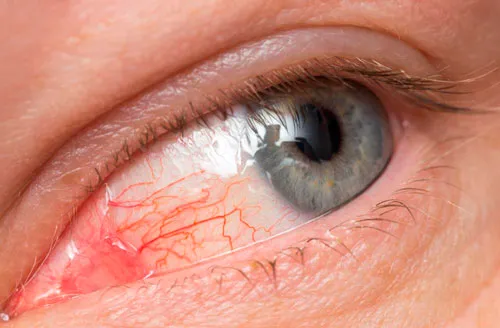

Allergic reaction to mascara: causes and effects

An allergy to mascara is an organism's reaction to a cosmetic product due to its lack of quality or intolerance to one of the components. 60% of women tint eyelashes daily, and 40% periodically use this tool to create makeup. But few people know that due to its use may be allergic to mascara. It arises because of ignorance and improperly chosen cosmetic product.
Allergy symptoms
Susceptibility to allergies of the mucous membranes and the skin around the eyes is caused by spraying of ink particles on this area. The main prerequisites for the development of an allergic reaction are:
- idiosyncrasy of a certain component in the composition of the product
- products from an unscrupulous manufacturer, which in the manufacture allows for the addition of low-quality and cheap raw materials, toxic substances to the eyes and fragrances
- End-of-period, the tube should be examined carefully before buying to avoid possible allergies source
- combination of a base under the shade and mascara could provoke backlash
- non-compliance with the storage rules
- discrepancy of age to the use of carcasses. You can not put makeup on the eyelashes for little girls
- borrowing someone else's cosmetics
Symptoms
How does an allergy manifest itself? Symptoms are similar to the first signs of ARVI and dermatitis on the face. Each individual symptom leads to unpleasant, uncomfortable sensations and is expressed in the form:
- itching
- redness of the conjunctiva and eyeball
- peeling and rash on the eyelids and skin around them
- tearing, purulent discharge from the eyes
- pain when blinking and visual functions
- fear of light
- swelling of the eyelids
To understand what exactly mascara causes allergic irritation is simple. The first alarm bells may appear from the second use. This indicates that a certain allergen has got on the skin or mucous membrane. Both eyes are not always subject to them, development of irritation is possible only in one eyelid. With untimely and fast treatment, the appearance and health of the eyes deteriorate, allergens spread throughout the face and body.
Treatment
Elimination of unpleasant consequences and treatment is the systematic administration of appropriate medicines and folk remedies. But first you need to thoroughly wash makeup with running water without interacting with soap or tonic.
To get rid of itching and swelling on the eyes will help antihistamine drug, produced in drops, tablets, ointments. Depending on the degree of spread of irritation and the place (skin, mucous membrane), certain medications are prescribed.
Help home remedies that will facilitate and reduce signs of irritation. These are phytotherapeutic methods: chamomile decoctions, turns or calendula, the use of tea compresses for ever. Broths need to wash the eyes three times a day until the symptoms subside. It is simple and easy to prepare - for 1 glass of water 1 tbsp. plant materials. It boils for 5-10 minutes, infuses and leaves to cool.
In order not to be afraid of eye irritation, you can make mascara yourself. For its preparation will need: activated charcoal, burdock, sunflower and almond oils, vitamin E. Video with detailed step by step and detailed guidance will allow you to create a harmless makeup tool.
Rules for choosing and using mascara to prevent allergies
- The cost of carcass should be quite high. Prefer means that do not contain: toxic preservative, harmful chemical compounds and animal fats
- First, before applying on the eyelashes, test for quality and allergic reaction
- You can buy a hypoallergenic cosmetic, it will reduce the risk of allergens and is preferable for sensitive eyes
- Beware of new products with a pungent smell
- Change mascara after 3 months.
- Conditions for its storage - a cool and dark place, without an excess of moisture and tolerance of sunlight.
- Use individually means, do not give to strangers. This will avoid the ingress and development of microflora of bacteria on the mucous membrane of the eyes
- Remove your make-up special cosmetic products intended for eyelids.

Bimatoprost: before and afterIn most cases, eyelashes suffer from external negative factors

Eyelashes - long, thick - the dream of any girl.But like any human organ, they are subject to

Pink eye With the correct and timely treatment of acute conjunctivitis takes 4-5 days, chronic - 4-5 weeks.

What is Careprost? Сareprost is a tool for enhancing eyelash growth.

What is trichiasis? Trichiasis should be distinguished from the turn of the century

What is eyelashes pediculosis? If your eyelashes were always of such length and thickness

Why some guys have longer eyelashes? Women can say with confidence that men's eyelashes are longer

Diet for eyelash growth? The first thing that needs to be included in the diet for long eyelashes

Pink eye remedies In order know remedies for pink eye it is important to learn what pink eye is.

Puffy eyes causes If you are wondering what causes puffy eyes or how to get rid of puffy eyes, then you have come to the right place.

Blepharoplasty It is possible that anyone who had an eye infection or problem may know about Blepharoplasty.

Eye twitch cause One fine morning you wake up only to find involuntary spasms around your eyes that concern you with the question, why is my eye twitching?

Dark circlesEyes have a significant role in escalating a person's personality.

Vitamins for eye health Antioxidants and vitamins are very essential in order to have healthy and sparkling eyes.

Buy Bimatoprost Buy Careprost price 29$ Order online careprost without prescription. Bimatoprost 0.03 % discount prices. Save 20%. Absolute privacy. Worldwide shipping.